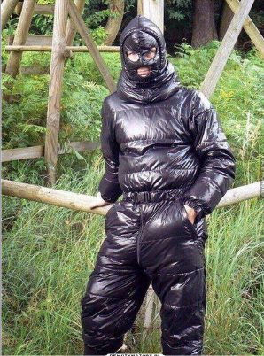

Oto przykład jak powinien wyglądać strój ucznia ŚlTZN
Strój szkolny powinien się składać (przykładowy strój znajduje się na poniżej):
Koszula to podstawowy element stroju szkolnego. Zazwyczaj są one jednokolorowe i wykonane z materiałów łatwych do utrzymania w czystości.
Spodnie lub spódnica, spodniezazwyczaj są klasyczne i dopasowane, natomiast spódnice powinny mieć odpowiednią długość i być wykonane zgodnie z regulaminem szkoły.
Długie białe skarpetki stanowią dopełnienia całego stroju.
Buty powinny być koloru brązowego oraz wiązane.
Podczas ważniejszych świat takich: rozpoczęcie i zakończenie roku, Narodowe Święto Niepodległości idt. ucznowie powinni nośić białą koszulę natomiast w inne dni koszule mogą mieć inne kolory.
Jeżeli chodzi o strój podczas zajęć zawodowych powinien być:
Łatwy do czyszczenia strój jest wykonany z czarnej foli więc zabrudzenia bardzo łatwo i szybko będzie można wyczyścić
Lekki uczniowie nie powinni nosić cieżkich ubrań dlatego folia jest świetnym rozwiązaniem
Twarz powinna być także zakryta należy dbać o każdą część ciała
